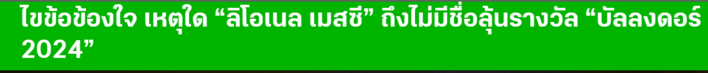

 |
|||||||
|
|||||||
|
เมสซี่กดไป 22 ประตูกับอีก 13 แอสซิสต์จากการลงสนามทุกรายการให้กับ
อินเตอร์ ไมอามี
แต่ทว่าสิ่งหนึ่งที่ทำให้ตัวเลขดังกล่าวไม่ได้มีน้ำหนักให้พิจารณามากเท่าที่ควรก็คือการที่เวที
เมเจอร์ลีก ซอคเกอร์ ของสหรัฐอเมริกา ไม่ได้มีความยากเท่ากับลีกใหญ่ๆ
ในยุโรปถ้าให้พูดง่ายๆ ก็คือทีมงานผู้ที่มีสิทธิ์คัดสรรรายชื่อนักเตะ
30 คนสุดท้ายนั้นมองว่ามีนักเตะหลายคนทำผลงานได้ดีกว่า เมสซี
แถมยังค้าแข้งในลีกที่มีการแข่งขันเข้มข้นกว่าอีกด้วย |
|||||||
| นายภูธฤทธิ์ ศรีสุข 664230025 66/45 เทคโนโลยีสารสนเทศ วิทยาศาสตร์และเทคโนโลยี มหาวิทยาลัยราชภัฏนครปฐม | |||||||